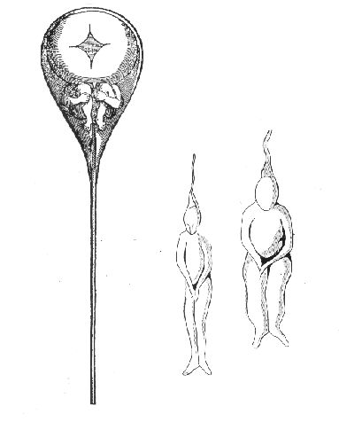
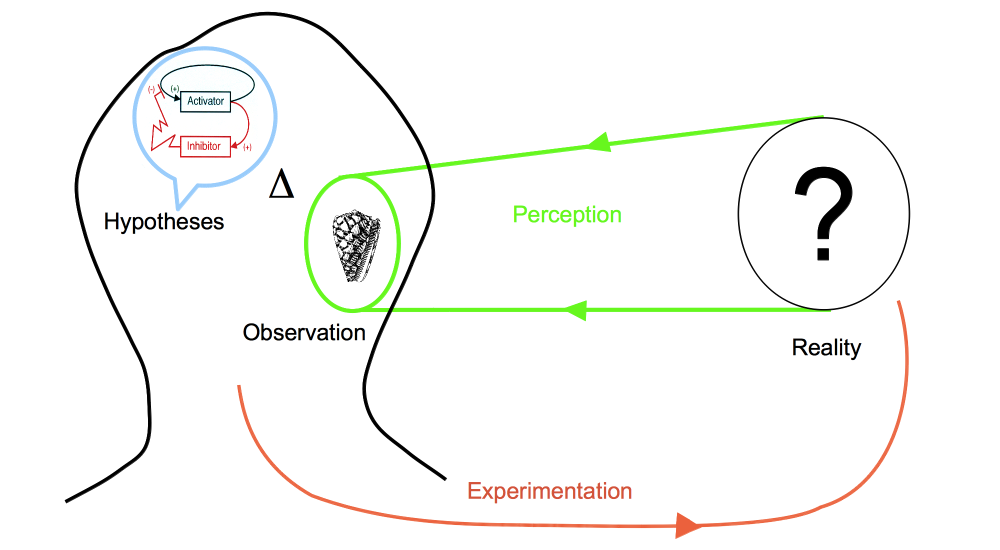
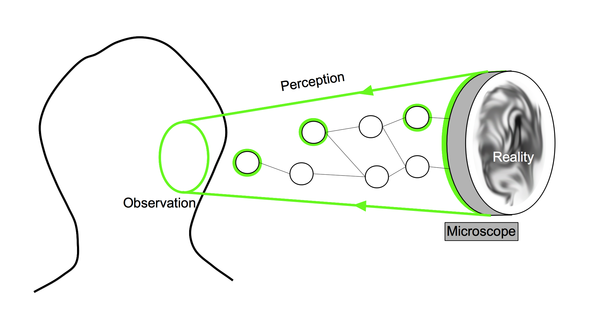
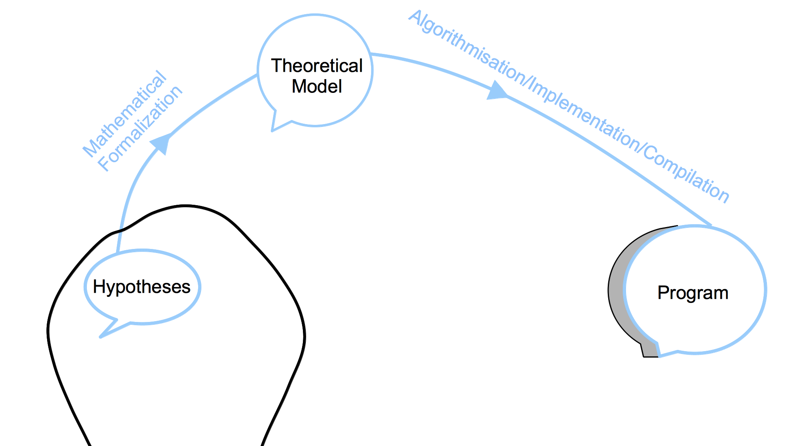
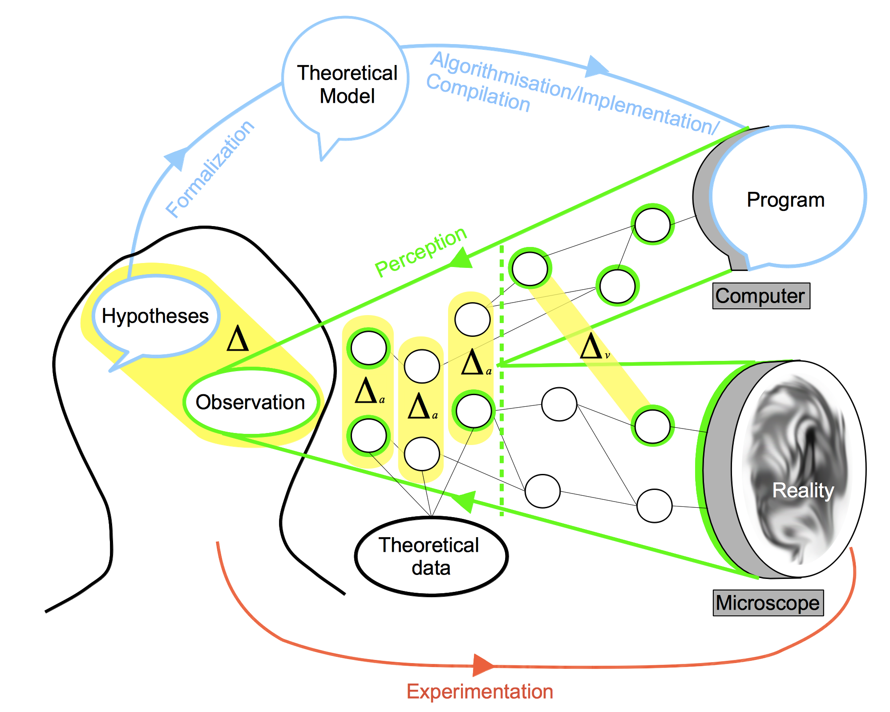

A general definition would state that development is a dynamical process leading a given organism to a given morphological state, and that the study of development is the study of the mechanisms ruling the coordination of cellular differentiation through space and time in a multicellular organism. This process is not steady, however, and organisms may alternate periods of intense transformation with "quieter" periods dedicated to growth only. However, the most dramatic transformations occur in the beginning, when the egg divides into myriad of cells. These soon start to perform a collective ballet of complex movements, which are precisely coordinated through a system of physicochemical interactions. It is interesting to note that this process never ends, the morphological state of an organism undergoing constant change, albeit smaller, until senescence and death.
The definition of development has its own "embryogenesis": it also changed with the numerous discoveries that punctuated the history of the field, and the practical methods used. Three major periods can be distinguished [ref Hopwood XXXXX]:
pre 1880: classical descriptive biology (Section 1.1.2)
1.1.2. First Theories: Epigenesis, Preformation and Spontaneous Generation
Aristotle Envisioned Them All
If Hippocrates is often labeled as the first embryologist, from his Hippocratic Collection where he describes the successive stages of incubation of hens' eggs , it is Aristotle in De Generatione Animalium who initiated the main theory of the formation of living organisms, which still hold today. This theory, called "epigenesis", states that organisms develop through changes of shape. New parts appear and deform by themselves through a series of stages. In his Book II, Aristotle foresees the alternative theory of "preformation", which resisted until the 18th century. It states that no new structure are generated during development, but parts simply unfold and grow. His words was: "Either all the parts, as heart, lung, liver, eye, and all the rest, come into being together or in succession, as is said in the verse ascribed to Orpheus, for there he says that an animal comes into being in the same way as the knitting of a net." .
the preformationists' parenthesis
preformation The organisms develop from miniature versions of themselves. Simple growth of the part without differentiation.
A third hypothesis was developed by Aristotle in the "Historia animalium" . Synthesizing contemporary thought, he introduces the theory of "spontaneous generation". This theory proposes that some complex organisms, like insects, are generated from non-living matter, like putrefying earth, vegetable matter or dead flesh.
Early Mechanical Interpretation
In 1651, William Harvey was among the firsts to consider embryonic development as a dynamic process requiring causal explanations of the sequences of events .
In 1664, Descartes' "De la formation du foetus" is posthumously published and it contains the first attempt to explain the formation of an animal embryo by the means of mechanistic interactions. The male and female seeds would heat up and ferment until some of their particles would start to move and form the organs, from the heart which would push the blood directly towards the place it is freest to go and participating at the formation of the brain .
The End of Spontaneous Generation
In 1668, Gregorio Redi realizes an experiment which discredits the spontaneous generation hypotheses by showing that no fly can form in a closed jar containing food or already dead flies. As maggots would appear when the same experiment was run in open jar, he concludes that the food or the dead flies could not produce maggots by themselves . The final blow to this theory was struck by Louis Pasteur two centuries later (1859) when, as a young chemist, he shown that a boiled meat broth would not produce new organisms. The game changer (XXXXXX) of his experimental setup was that he bent the neck of the container to give it a S shape. It allowed air to pass through it but not the aerial microorganism because of the gravity grounding them. When the broth was put in touch with inflexion point of the neck, a culture would rapidly start to grow.
The End of Preformationism

Drawing of the homonculi observed in sperm by Nicolaas Hartsoecker (1695)
The contention between preformists and the upholders of epigenesis lasted for a longer time.
Antonie van Leeuwenhoek was a Dutch scientist who created various microscopes. In 1676, he made the first observation of single-celled organisms, "animalcules", soon after Robert Hooke has first described and termed the "cells" . Leeuwenhoek was discovered that the sperm cells of animals, among which humans, was entering the egg cell . In addition to his contribution to the refutation of spontaneous generation, this discovery favored the spermist side of the preformation camp. Some of them started to describe miniatured humanoid shapes as did Nicolaas Hartsoeker in 1695 ().
Caspar Wolff
Germ Layers
manque Caspar Wolff, Karl Ernst Van Baer,
In the 1820s, Christian Pander explains from the reinvestigation of developing chicks in egg that development does not start from the formation of organs but originates from the transformation of primitive sheets of tissue, the "germ layers" .
Cell Theory
Between the 1820s and the 1850s, the cells were added as the second pillar of embryological analysis mostly under the influence of Johannes Müller .
"The cell theory of the late 1830s arose from the attempt to generalize the development of these fundamental organs to later structures, and to unify development across the living world. " (XXXX réecrire from Hopwood ajouter info sur cell theory: "every living creature is made of cells. Cell as the building block of the living")
-> cleavage
"From the 1840s, Robert Remak argued that all cells arise from preexisting cells, from the egg, through the germ layers, to the tissues." (Hopwood) . This insight is now called the segmentation or cleavage stage and it is indeed the first morphological event of today's developmental study.
-> germ-layer specificity
Remak also introduces the concept of germ-layer specificity in vertebrates, stating that each layer - endoderm, mesoderm, and ectoderm - is specifying the cell type of all cells originating from it (muscles, skin, nervous system, intestine...) .
->lineage, specification, presumptive fate map
was it
This concept is central to embryology as it preludes the fundamental questions that will occupy embryologists until then.
mendel law
-> look for cleavage
-> lignage,
-> body plan / rupture de symmetrie
-> bod
schema
Egg segmentation from a dog's oviduct, surrounded by the zona pellucida and spermatozoa as represented by Albert Kölliker in 1861 .
1.1.3. The Rise of Experimental Embryology
From the 1880s, some embryologists reinvented their methods through experimentation to decipher the causal links between the successive stages of development. Denominating this discipline Entwicklungsmechanik (“developmental mechanics”), Wilhem Roux and others applied on embryos various kind of perturbations, either mechanical, thermal, chemical or electrical .
Entwicklungsmechanik: Self-Differentiation vs. Dependent Differentiation
The key question that Roux was raising was whether the differentiation process of the parts of an embryo is autonomous from external influence ("Self-differentiation") or not ("dependent differentiation"). In 1888, Roux obtained half-embryos after he destroyed one of the cell of a two-cell frog embryo with a hot needle. The half-embryos was presenting either anterior or lateral halves. Roux concluded that each blastoderm is capable of self-differentiation, independently from the missing half .
A year before, in 1887, Laurent Chabry was the first to characterize the autonomous differentiation of cell fate. By killing two identified blastomeres at the 8-cell stage of the ascidian tunicate, the ascidian became tadpode which were missing tail muscles. When he extracted and cultured the same two blastomeres at the same stage, they resulted in isolated tail muscle .
In 1891, following Roux's influence, Hans Driesch repeated the experiment on a two-cell stage sea urchin embryo. He separated both blastomeres and observed that each one had differentiated into a half-sized, yet complete, sea urchin larva.
In 1893, by pressing on a sea urchin embryo at the third cell cycle, Driesch completely modified the relative position of the cells and still obtained normal larvae. A mosaic determination process would have produced highly perturbed embryo so it proved that the determination occurs later than expected.
Driesch obtained normal larvae from these embryos. He concluded, "The relative position of a blastomere within the whole will probably in a general way determine what shall come from it."
These experiments epitomize the antagonist interpretation of an autonomous differentiation which requires some "determinants" to be present at the earliest stage and to be separated by the cell division and thus spatially specify the cell fate (mosaic development), as opposed to a development which depends on the interaction between the cells.
citer classification de Davidson in Davidson, E.H., 1991. Spatial mechanisms of gene regulation in metazoan embryos. Development, 113(1), pp.1–26.
Neither totally mosaic or totally regulative, development's secret lies in the balance between both principles. Sometimes, the cell seems to be highly dependent from their surroundings and sometimes they just batten down the hatches and dive into their differentiated fate. From this point, most of the embryological studies will be consecrated to deciphering the modus operandi of these principles from their macroscopic characterization at the tissue level to the molecular mechanisms at the sub-cellular level.
Morphogenetic Fields
Lawrence, P.A. amp;evine, M., 2006. Mosaic and regulative development: two faces of one coin. Current Biology, 16(7), pp.R236–R239.
Autonomous vs Conditional specification/specialisation/determination/differentiation (yields concept of induction, determination, competence, potentialities, regulation, diffusion, morphogenetic fields, gradients...): maybe the most fundamental concept of development, developmental concept in its own right (not borrowed to another discipline). at the tissue level and at the cellular level.
The early 20th embryologists refined these question with new experiments as grafts.
Fields
Here we must define the notion of competent tissue and induction XXXX -> gradients, fields, competence, induction, differentiation, commitment, specification, determination, specialization, canalization, regionalization, potential
In 1918, Ross Harrison publish a paper which introduced the concepts of morphogenetic fields . He experimented various limb grafts on newt embryo. He grafted some cells from a specific region of the mesoderm to the non-neural ectoderm and observed that an additional forelimb was formed. The original grafted cell population has the ability, even after transplantation, to "remember" its fate. Even if the cells were separated in two subpopulation and grafted independently, both grafts would grow intact limb . The key property of a morphogenetic field is to conserve its potential even after important manipulation.
Later observations shown that the fate of the morphogenetic field was depending on the position along the antero-posterior axis. It lead to the notion of gradient-field which determines the identity of the fields .
"Harrison defined the mesodermal cells of the limb rudiment as what would be called a “field” a physically bounded area of interaction within which state of determination is a function of position."
Induction
In 1924, Hans Spemann and his PhD student Hilde Mangold reported the discovery a tissue in the Newt gastrula which, when grafted on the ectodermal region of another Newt embryo, triggers a neurulating process and initiates the formation of a secondary embryonic axis (Spemann, H. amp;angold, H., 1924. über Induktion von Embryonalanlagen durch Implantation artfremder Organisatoren. Wilhelm Roux' Archiv fur Entwicklungsmechanik der Organismen, 100(3-4), pp.599–638. ). This tissue was denominated the organizer as it was able to instruct and organize the adjacent ectoderm. Spemann proposed two different speculative mechanisms: either the existence of a chemical substance that would be transmitted to the induced tissue or the inducing tissue would possess a specific vitalistic "structure" associated to the living embryo . These hypotheses became the focus of intensive study around the world.
Boiling, dessicating and other tissue killing experiment exercised on the Spemann organizer rapidly dismissed the second hypotheses. The organizer was not any more actively organizing the formation of the induced organs but simply releasing a water-diffusible chemical agent which would initiated the self-organization of the induced tissue. A global quest on the identity(ies) of the inducing substances started around the world.
see Armon, R., 2010. Between Biochemists and Embryologists – The Biochemical Study of Embryonic Induction in the 1930s. Journal of the History of Biology, 45(1), pp.65–108.
experiments:
dead or desintegrated organizer tissue still induces neural plates (Johannes Holtfreter, 1932) see Gerhart, J., 1998. Johannes Holtfreter: January 9, 1901-November 13, 1992,)
1961 Lauri Saxon showned that the inducing substance could act through "millipore" filter with an average pore size of 0.8 micron and a thickness of 20 microns, confirming that the substance was indeed diffusive.
...
candidate substances (from Steinbeisser, H., 1996. The impact of Spemann's concepts on molecular embryology ):
lipids in Needham, J.G., Waddington, C.H. & Needham, D.M., 1934. Physico-chemical Experiments on the Amphibian Organizer
oleic and nucleic acids Wehmeier, E., 1934. Versuche zur Analyse der Induktionsmittel bei der Medullarplatteninduktion von Urodelen
proteins: Barth, L.G. & Graff, S., 1938. The chemical nature of the amphibian organizer. Cold Spring Harbor Symposia on Quantitative Biology
activin, mesoderm inducing protein form chicken : Tiedemann, H. et al., 1992. The vegetalizing factor. A member of the evolutionarily highly conserved activin family. FEBS letters
follistatin (because the induction is not tissue-specific, a substance contains in several tissues was targeted): ...
Decades later, the variety of candidate substances positively inducing neurulation progressively discouraged the embryologists to elucidate the quest of finding tissue-inducing agent and the more promising field of modern molecular biology attracted the younger ones away from this quest . However, the concept of induction was only suffering a temporary slowing down, before witnessing a rebirth and eventually being grounded in physico-chemical terms.
section inspired by Gilbert, S.F., 1991. Induction and the Origins of Developmental Genetics.
2 questions :
.The question of the inputs: from what the shape is formed ?
.The question of how the shape evolve
Explain that it was hard to dissociate the developmental question from the question of evolution of species
until Morgan...
In the early 20th century, embryology and genetics were both part of the larger field of heredity and were tightly entangled. A split was initiated by the work of Thomas Morgan who proposed that, to avoid confusion, embryology would study the expression of the hereditary traits whereas genetics would deal only with the transmission of those traits (see chapter II of "The Theory of the Gene" ). From this time, some biologists tried to reunite both fields, leading the emerging field of developmental genetics.
The first publication which founded this field is the work of Gluecksohn-Schoenheimer which interpreted the defect in the induction of the mouse notochord as the consequence of a mutation of the Brachy gene (, ). The result not only pioneered developmental genetics but it also proposed a new methodology for the study of embryology. Instead of perturbing the development of embryo and observe the consequences of the phenotype, mutant phenotype were to be observed first and cause had to be decipher from it.
This methodological dichotomy would be resolved decades later with the experimental generation of mutants selected by the observation of their phenotypes. (like chemically induced random mutation in Drosophila by Nüsslein-Volhard and Wieschaus in 1980 or in Zebrafish a few years later )
Ajouter vision Waddington depuis livre
1.1.5. Molecular Genetics
1961
notion of induction at the subcellular level: gene that are activated by TF and locked by inhibitors or epigenetic methylation...
Operon-Lactose
the discovery of the operon lactose initiating the genetic trend of embryology / mechanism of induction and repression of the genes by the inactivation or the inactivation of the "repressor". regulator and operator (regulatory sequence see Davidson for its position on this ?) (JACOB, F. amp;ONOD, J., 1961. Genetic regulatory mechanisms in the synthesis of proteins. Journal of molecular biology, 3, pp.318–356. ) : already envisioned the influence of this discovery on induction, as the controlling mechanism of induction -> "The occurrence of inductive and repressive effects in tissues of higher organisms has been observed in many instances (...). It has repeatedly been pointed out that enzymatic adaptation, as studied in micro-organisms, offers a valuable model for the interpretation of biochemical co-ordination within tissues and between organs in higher organisms. The demonstration that adaptive effects in micro-organisms are primarily negative (repressive), that they are controlled by functionally specialized genes and operate at the genetic level, would seem greatly to widen the possibilities of interpretation. The fundamental problem of chemical physiology and embryology is to understand why tissue cells do not all express, all the time, all the potentialities inherent in their genome." (fin de l'article)
Immediately understood by some embryologists as Waddington who had defended the notion of a cytoplasmic activated, genetic control of the cell fate in development (chapter "The Activation of Genes by the Cytoplasm" in Waddington, C.H., 1956. PRINCIPLES OF EMBRYOLOGY, The Macmillan Company.) (from in A Conceptual... S Gilbert: induction and the origins of developmental genetics)
finally reconcile the orchestration of spatiotemporal cell specification with biophysical molecular paradigm
1. GRN
2. signaling pathways
ou inversement
Gene Regulatory Networks (GRNs), Cis-Regulatory Systems
description of the mechanism
see Arnone, M.I. amp;avidson, E.H., 1997. The hardwiring of development: organization and function of genomic regulatory systems. Development, 124(10), pp.1851–1864. :
genes expression is regulated by multiple "transcription factors" (TF) which target a specific region of the DNA.
This region is called "cis-regulatory" because the portion of DNA on which bind the TFs is usually on the same DNA molecule as the genes they regulate ().
activation/ inhibition
control rate of transcription (? really, how is it not only 0 or 1, dynamical regulation with TF level controling the expression to maintain it at a certain level. If the expression of the gene is too low, the GRN activates its cis-regulatory system and inhibite if the expression is too high).
--> not really :
"For one thing, it is relatively easy to measure transcriptional output directly and thus short-circuit this issue; or as done by Bolouri and Davidson (2003) a more or less mechanism-independent assumption can be made that transcriptional activity is proportional to driver site occupancy until it approaches the saturating absolute value of the maximum transcription rate characteristic of the system." (Davidson, E.H., 2006. The Regulatory Genome, Academic Press. )
"The rates or intensities of expression of differentiation genes are also subject to posttranscriptional modulation, as well as to modulation at the transcriptional level. This last can occur by target site divergence in cis-regulatory modules regulating individual structural genes, or in the modules regulating the battery controllers." (Davidson, E.H., 2006. The Regulatory Genome, Academic Press. )
"hardwired" network of interactions between through transcription factors.
Maternal Factors
first direct evidence of a maternal RNA present in the oocytes which control the early activation of the GRN in the mouse. (Renard, J.P. et al., 1994. A maternal factor affecting mouse blastocyst formation. Development, 120(4), pp.797–802. )
Pelegri, F., 2003. Maternal factors in zebrafish development. Developmental dynamics : an official publication of the American Association of Anatomists, 228(3), pp.535–554.
Maternal RNA anisotropy in the oocyte: differentiated initialization of the network
ex: Drosophila embryo with bicoid gradient from the anterior end.
"many additional asymmetries along this axis are established during oogenesis (Gavis and Lehman, 1992; St. Johnston and Nüsslein-Volhard, 1992; Roth and Schüpbach, 1994)." (from regulatory genome)
see Gavis, E.R. amp;ehmann, R., 1992. Localization of nanos RNA controls embryonic polarity. Cell, 71(2), pp.301–313.
see St Johnston, D. amp;üsslein-Volhard, C., 1992. The origin of pattern and polarity in the Drosophila embryo. Cell, 68(2), pp.201–219.
ex: C. Elegans -> A/P axis : Skn1 and Pal1 maternal TFs at the posterior end
External signal which generates anisotropy:
ex: C. Elegans D/V axis : cytoskeletal reorganization
...etc see chapter 3 regulatory genome
first grn were anecdotal, then in 2002, a large scale network (more than 40 genes) was published by Davidson et al. and its activity was correlated with the specification of the endomesoderm of the sea urchin embryo. (Davidson, E.H. et al., 2002. A provisional regulatory gene network for specification of endomesoderm in the sea urchin embryo. Developmental Biology, 246(1), pp.162–190. , Davidson, E.H. et al., 2002. A genomic regulatory network for development. Science, 295(5560), pp.1669–1678. )
Cytoplasmic Protein-Protein Interactions: The Missing Pieces
Imaging and quantification of the gene expression level in vivo : Dmochowski, I.J. et al., 2002. Quantitative imaging of cis-regulatory reporters in living embryos. Proceedings of the National Academy of Sciences of the United States of America, 99(20), pp.12895–12900.
Gene Regulatory Networks and Epigenetics
"the hidden controllers"
DNA and histone methylation participates in the control of the developmental genes (Lindeman, L.C. et al., 2010. Chromatin states of developmentally-regulated genes revealed by DNA and histone methylation patterns in zebrafish embryos. The International journal of developmental biology, 54(5), pp.803–813. , Lindeman, L.C. et al., 2011. Prepatterning of Developmental Gene Expression by Modified Histones before Zygotic Genome Activation. Developmental cell, pp.1–12. ).
control of the transcriptional activity by perturbation of the nuclear envelope through mechanical forces exerted by microtubule polymerization (Hampoelz, B., Azou-Gros, Y. amp;abre, R., 2011. Microtubule-induced nuclear envelope fluctuations control chromatin dynamics in Drosophila embryos. )
small RNA also participate in the regulation during developpement: differentiation signals modulate RNAi silencing to regulate developmental genes (in Yamanaka, S. et al., 2012. RNAi triggered by specialized machinery silences developmental genes and retrotransposons. pp.1–5.)
Signaling Pathways, Transduction
ou l'on decouvre comment la cellule interprete le signal exterieur
connecting GRNs together
review:
Pires-daSilva, A. amp;ommer, R.J., 2003. The evolution of signalling pathways in animal development. Nature Reviews Genetics, 4(1), pp.39–49.
"Various cell types in animal but only a few signaling pathways" ->
Wnt signalling
see Klaus, A. amp;irchmeier, W., 2008. Wnt signalling and its impact on development and cancer. Nature reviews. Cancer, 8(5), pp.387–398. :
"These signalling systems operate beyond cell and tissue boundaries, but function as morphogens that are secreted from one cell or tissue type to activate surface receptors, signal transduction components and transcription factors in neighbouring cells or tissues, regulating processes such as cell proliferation, survival or differentiation."
The Wnt gene has been discovered multiple times in different animals. Its name itself is the contraction of the two occurrences Int1 which was characterized in 1982 by Nusse and Varmus as a gene inducing mammary gland tumours in mice (Nusse, R. amp;armus, H.E., 1982. Many tumors induced by the mouse mammary tumor virus contain a provirus integrated in the same region of the host genome. Cell, 31(1), pp.99–109. ) and its homologue Wingless (Wg), described in 1973 as a gene provoking Drosophila wings'lacking mutants . The Wg mutation was later associated with default in the Drosophila segmentation process (Nüsslein-Volhard, C. amp;ieschaus, E., 1980. Mutations affecting segment number and polarity in Drosophila. Nature, 287(5785), pp.795–801. ).
Notch
see Artavanis-Tsakonas, S., Rand, M.D. amp;ake, R.J., 1999. Notch signaling: cell fate control and signal integration in development. Science, 284(5415), pp.770–776.
see Bray, S.J., 2006. Notch signalling: a simple pathway becomes complex. Nature reviews Molecular cell biology, 7(9), pp.678–689.
ex: dorsoventral patterning in the Drosophila gut formation by controlling cell fate specification ( Fuss, B. amp;och, M., 2002. Notch signaling controls cell fate specification along the dorsoventral axis of the Drosophila gut. Current biology : CB, 12(3), pp.171–179. )
Hedgehog
see Wicking, C., Smyth, I. amp;ale, A., 1999. The hedgehog signalling pathway in tumorigenesis and development. Oncogene, 18(55), pp.7844–7851.
Jiang, J. amp;ui, C.-C., 2008. Hedgehog signaling in development and cancer. Developmental cell, 15(6), pp.801–812.
TGFβ-BMP
see Wu, M.Y. amp;ill, C.S., 2009. Tgf-beta superfamily signaling in embryonic development and homeostasis. Developmental cell, 16(3), pp.329–343.
Mechanotransduction
mechanical action on the cell as a regulatory input (either through genetic regulation or cytoplasmic regulation)
a review : Eyckmans, J. et al., 2011. A Hitchhiker's Guide to Mechanobiology. Developmental cell see
First theory involving mechanical forces:
Wolff, J. Das Gesetz der Transformation der Knochen. (Hirschwald: 1892): the mechanical environment impacts the structure of bone tissue after healing of fractures.
Roux, W. Gesammelte Abhandlungen über Entwicklungsmechanik der Organismen. (1895) and Thompson, D. A. W. On Growth and Form. (Cambridge University Press: 1917): mechanical forces shape tissues and organs during embryonic development
More recently externally applied forces have impact on cellular proliferation (in bone , vascular system), cell signaling (endothelial and smooth muscle ).
me: looking like first in vitro experiments started in early 1980s: force pressure exerted on cells modify cell function. Particularly, study on blood-flow-dependent shear stress on cells in angiogenesis, vascular remodeling, atherosclerosis.
see in Davies, P.F. et al., 1984. Influence of hemodynamic forces on vascular endothelial function. In vitro studies of shear stress and pinocytosis in bovine aortic cells. The Journal of clinical investigation, 73(4), pp.1121–1129.
me: does not seem to emphasize the mechanotransduction but rather the specific discovery. Need to find a more "important" paper...
me: another one Franke, R.P. et al., 1984. Induction of human vascular endothelial stress fibres by fluid shear stress. Nature, 307(5952), pp.648–649. see
molecular transduction units: "many anatomical sites could be involved in transducing such forces into biochemical signals (Eyckmans)"
site 1: force-induced nuclear deformations can directly alter genomic structure and accessibility of transcription factors to specific genetic targets, but no direct demonstration of such a mechanism has yet been described (Eyk)
me: mechanotransdution catogory 1: as a source of cytoplasmic reaction (not involving genetic regulation but may need a certain state given by genetic regulation)
site 2: adherent junctions
Nelson, C.M. et al., 2005. Emergent patterns of growth controlled by multicellular form and mechanics. Proceedings of the National Academy of Sciences of the United States of America study of the impact of tension and adhesion on the spatial pattern of proliferation in in vitro multicellular system (experiment + modeling). Endothelial cells. Results the higher the mechanical stress, the more the cells proliferate. Chemically inhibiting cytoskeletal tension-responsible molecules (rho kinase, myosin II ATPase with blebbistatin) induces a reduction of proliferation rate.
More recently, in 3D epithelial tissues (branching pattern) in Gjorevski, N. and Nelson, C.M., 2010. Endogenous patterns of mechanical stress are required for branching morphogenesis. Integrative Biology: "branching only occurred at locations where the biochemical and mechanical cues were predicted to reinforce each other" and "We found also that the magnitude of mechanical stress at branching sites correlated with the extent of branching: decreasing the magnitude of stress by decreasing cellular contractility or matrix stiffness resulted in decreased branching, whereas increasing the magnitude of stress resulted in increased branching."
both previous papers evoke "mechanical gradients"
in vivo context, drosophila mesoderm invagination in Martin, A.C. et al., 2010. Integration of contractile forces during tissue invagination. The Journal of cell biology: feedback between actomyosin meshwork pulsing contraction and intracellular adhesion through adherent junctions. No influence on the GRN regulation (twist and snail are required but nothing shows that they are up-regulated by mechanotransduced signals)
Drosophila again, Fernandez-Gonzalez, R. et al., 2009. Myosin II dynamics are regulated by tension in intercalating cells. Developmental cell: "myosin II is stabilized at the cortex in regions of increased tension. Myosin II is recruited in response to an ectopic force and relieving tension leads to a rapid loss of myosin, indicating that tension is necessary and sufficient for cortical myosin localization."
site 3: hemidesmosme
in Zhang, H. et al., 2011. A tension-induced mechanotransduction pathway promotes epithelial morphogenesis. Nature (C Elegans): "By compressing muscle-defective mutant embryos between a blunted microneedle tip and a programmable microscope stage, the authors were able to rescue GIT1 signaling and CeHD maturation, thus providing a link between muscle-generated tension and longitudinal growth in C. elegans." (Eyk)
me: the real deal, mechanotransduction category 2: developmental genes activation induced by external force:
in Desprat, N. et al., 2008. Tissue deformation modulates twist expression to determine anterior midgut differentiation in Drosophila embryos. Developmental cell, show how compression forces between two cell types during Drosophila germ band elongation can induce the expression of Twist, a transcription factor that regulates the differentiation of the anterior midgut. (Eyk) magnetic microtweezers were used to push the magnetized patch against the stomodeal cells with a force of 60 ± 20 nN. These mechanical manipulations rescued Armadillo/beta catenin translocation from the cell junctions to the nucleus which restored transcription of Twist (Eyk)
me: the real deal 2, mechanotransduction category 3: internal polarizaton of the cell induced by external force:
in Weber, G.F., Bjerke, M.A. & Desimone, D.W., 2011. A Mechanoresponsive Cadherin-Keratin Complex Directs Polarized Protrusive Behavior and Collective Cell Migration. Developmental cell (Xenopus): local pulling on C-cadherins induces polarization of the internal structure of the cell (keratin intermediate filament toward stressed sites, plakoglobin at the cadherin adhesion sites. Cell protrudes and migrates/intercalates at the other end of the cell. It explains how in multicellular protruding ensemble, intercalation axes align, and (maybe) how a migration signal can be propagated (if these cells are in a certain state) ). Still need to elucidate how to drive this powerful property.
other paper:
Dupont, S. et al., 2011. Role of YAP/TAZ in mechanotransduction. Nature, 474(7350), pp.179–183.
other reviews Orr, A.W. et al., 2006. Mechanisms of mechanotransduction. Developmental cell, Jaalouk, D.E. & Lammerding, J., 2009. Mechanotransduction gone awry. Nature reviews Molecular cell biology, Wozniak, M.A. & Chen, C.S., 2009. Mechanotransduction in development: a growing role for contractility. Nature reviews Molecular cell biology
1.1.6. Cell Biomechanics
start with with review: Keller, R., 2012. Physical Biology Returns to Morphogenesis. Science, 338(6104), pp.201–203. :
In addition to the genetic and molecular aspects, a characteristic feature of the study of development is the study of the biomechanical properties and functions of the cells. As reviewed by Ray Keller , this field has stayed quiet for a long time during the 20th century but has become more and more vigorous recently. Keller discriminates two tendencies which structure the physical shaping of embryos and which were both envisioned by Johannes Holtfreter: the notion of "selective affinity" modulated by adhesion and the notion of the physical integration of multiple local cellular behavior.
Differential Adhesion Hypothesis and Improvements
Holtfreter used his experimental skills to separate cells from their different germ layers and mix them. He observed that they were able to recognize their lineage origins and they would adopt different preferential association or "affinities" according to it . He postulated that this mechanism could lead to the progressive organization of the embryo. From 1962, Malcom Steinberg refined this idea and developed the Differential Adhesion Hypothesis (DAH). Relating the behavior of cell during development to the properties of liquids, the DAH states that in heterogeneous population, cells are both cohesive and mutually motile and the interfacial surface tension will lead the ensemble towards the most stable configuration. The main factors defining the interfacial surface tension was originally the mutual adhesivity between cells, cells having a higher affinity meaning a stronger adhesive bonds. This theory had a great influence because of the simple causal link it introduced between gene expression and physical shaping rule through adhesion-molecule. Later refinements added the cell rigidity as a key factor to the interfacial surface tension definition. Through cortical tension, the principle become that stronger adhesion is increasing the contact size whereas stronger cortical tension decreases it .
Cell Behaviorism
The second notion envisioned by Holtfreter was that cell mechanical behavior was truly diversified and that the collective integration of the local behaviors was to be deciphered. He observed the specialization of the external layer of the frog gastrulae, its organization as planar sheet whom particular cell shape changing must express particular cell mechanical behaviors. He also observed the protrusive activities of some cells in culture, the way they exert forces of the substrate and orient their migration. Trinkaus determined the migrating behavior of cells in the avian neural crest, echinoderm mesenchyme and the teleost fish epiboly .
XXX ajouter historique des epitheliums... invaginations XXXX.
recent review: membrane mechanism during the formation of the apical-basolateral axis of polarity in epithelium see
Migration
Individual vs collective
active or passive: may produce the same behavior in term of displacement
Individual migration ->_extensively studied in vitro
example: progenitor stem cells
collective migration when a group of cell remains connected during their movement.
less studied
2 archetypical scenario:
a. border cells of the group are active and exert forces with the surrounding tissues.
b. inner cells of the group are active and
en vrac
Weijer, C.J., 2009. Collective cell migration in development. Journal of Cell Science, 122(Pt 18), pp.3215–3223.
Ilina, O. amp;riedl, P., 2009. Mechanisms of collective cell migration at a glance. Journal of Cell Science, 122(Pt 18), pp.3203–3208.
Rørth, P., 2009. Collective Cell Migration. Annual review of cell and developmental biology, 25(1), pp.407–429.
Vedula, S.R.K. et al., 2012. Emerging modes of collective cell migration induced by geometrical constraints. Proceedings of the National Academy of Sciences, 109(32), pp.12974–12979.
Discussion descriptive vs experimental
passage de descriptif a experimental très important.
description -> too speculative ??
experimental -> more serious ??
from hopwood:
"By the 1880s, academic embryology was in turmoil. The inability of teachers
to agree, especially on the relative weighting of embryological and comparative
anatomical evidence, turned influential students away from evolutionary
morphology. They abandoned problems such as the origin of the vertebrates
to focus on narrower questions, which they expected to answer using a more
limited selection of materials, and many modeled their science on experimental
physiology. Indeed, by opposing “experimental” to “descriptive” embryology,
the more militant secured an identity as experimental biologists in a
science they saw as overly descriptive and rife with unsupported speculation.
In the 1970s and 1980s, historians of biology reinvestigated the changes in
embryology between 1880 andWorldWar I as exemplifying that wider transformation
in the organization, problems, institutions, and methods of the life
sciences by which biology as we know it was made. Experimental embryology
and genetics were taken as model subdisciplines. Initial efforts to generalize
tended to reinforce a one-dimensional view of a “revolt from morphology,”
but later studies worked to produce a more nuanced and inclusive history.31
Yet the very agenda of searching for the origins of the new biology has underestimated
continuities and excluded significant innovations in human and
comparative embryological research."
->pas bien compris
descriptive bio unique tool to test evo hypotheses: for example comparing different species to investigate the relations of phylogeny and ontogeny. ??
experiment for development only questions??
"Experiment, we can conclude, worked in two ways: as a practice and as a
rhetoric, even an ideology.41 As a practice, experiment became the method
of highest status. As a rhetoric, experimentalism associated its practitioners
with modern rigor and control and simultaneously created “descriptive
embryology” as its unglamorous other, ideally relegated to a “classical” past.
Experiment did not in fact replace analysis but was added to it. Experimentalists
sought to reveal the potentialities of parts and analyzed operated embryos
for the presence or absence of tissues, cells, or molecules; they also invested
time in making standards, “normal stages” adapted from Keibel’s plates and
“fate maps,” against which to assess the effects of their interventions.
Nor did “descriptive embryology” just fade slowly into the background; in the
years before World War I, when most histories have experimenters making
all the running, “descriptive” embryologists founded both the first specifically
embryological society and the first research institution dedicated to the
science. And though the war seriously disrupted the European initiatives,
comparative work continued."
1.2. Issues and Objectives
Mettre en avant la nécessité d'un nouveau cadre théorique pour répondre aux questions actuelles.
Argument Ray Keller -> Keller, R., 2012. Physical Biology Returns to Morphogenesis. Science, 338(6104), pp.201–203.
Despite these advances, the question of
how local cell behavior and forces are physiologically
and mechanically integrated over
hundreds or even thousands of cells remains
a challenge, to be met with new technologies
and biophysical approaches to explore possible
answers. ...
... Most important, applying the principles
of engineering and soft-matter physics to
cell and tissue morphogenesis allows the construction
and testing of hypotheses that are
meaningful at embryonic length scales, rather
than the often deceiving extrapolation from
mechanics on the length scale of our experience
( 15). Recent approaches combining,
for example, computational modeling, biomechanical
measurement, and experimental
manipulation have advanced our understanding
of how local cell behavior and mechanical
interaction of tissues drives morphogenesis
( 16– 18). Physical biology has indeed returned
to a central and essential role in analysis of
integrated cell movements.
argument:
enormément de parametres, tout est interdépendant:
-soit on feint de l'ignorer et on étudie les éléments séparement (mais on fait l'autruche) et on valide des hypotheses self-consistent (mais fausse) -> ce qu'on fait aujourd'hui
-soit on fait des modeles integratifs, on fera des erreurs, plus difficile mais il faut commencer à attaquer la complexité, cette approche est complémentaire et permet d'être moins naif, de voir les limites de l'approche précédente
1.3. Methodology
In this section, our goal is to lay out the methodological principles and workflow that are at the foundation of our project. In short, we defend the notion that the complex nature of the processes involved in a phenomenon such as vertebrate development requires the use of "augmented" tools and strategies, built upon the classical experimental scientific framework. While this is not a dissertation on the philosophy of science, we felt it was nonetheless crucial to clarify the framework of our modeling and simulation endeavors, which constitute an attempt at tightly integrating experimental observations with theoretical models in order to unravel the physical mechanisms of embryogenesis . To this aim, we will make short but, we hope, important preliminary remarks about the generation of hypotheses and models by scientists and the tools that they design to help them in this process, then discuss the notion of validation and quality of a model.
Accordingly, this section is organized as follows: we first comment on the position of a scientist-modeler with respect to the external reality, i.e. her/his object of interest, but also the rest of the scientific community; then we examine the tools that can be used to "augment" the three fundamental scientific steps of perceiving, conceiving, and manipulating, which together form a loop; finally, we ask what it means for hypotheses to be ultimately "validated" by a fitness function, which is essentially a measure of the discrepancies between the simulated and the raw data.
1.3.1. Scientists "in the Loop"
The Individual
Experimental science stages an individual and her/his environment, or "reality". Like any other explanation-seeking activity, experimental science is characterized by three fundamental processes in a cycle: perception of the environment, generation of new hypotheses, and experimentation on the environment to test these hypotheses (Fig. ).

The perceptual-conceptual loop of experimental science augmented with computer siumulation. It involves two main actors: the individual and reality (environment); and three main processes: perception, hypothesis generation (modeling), and experimentation.
The loop can be entered by the individual perceiving and observing her/his environment.
The observations made by this individual are then matched with the knowledge that s/he holds. Most of the time, observations conform to this knowledge and no particular reaction is elicited. Otherwise, a significant difference between the observations and what was initially expected by the observer triggers a "curiosity" signal that challenges her/his existing set of hypotheses and leads her/him to reconsider some of them. The cognitive processes by which s/he creates new hypotheses (e.g. analogy, inference, induction, abduction, or deduction) are not discussed here. Ultimately, "satisfying" hypotheses are the ones that can establish causal relationships among the observations. They can identify certain observations (the effects) as the consequences of others (the causes). Hypotheses also have a predictive value as they allow to extrapolate the behavior of the system when the causal factors are modified.
The "experimental" qualifier attributed to many domains of biology or physics comes from combining the pure thought exercise of generating new hypotheses and real interactions with external objects in order to test the validity of these new hypotheses. The most efficient way for an observer-modeler to assess that the causal relationships that s/he inferred are compatible with her/his observations is to identify some elements of the studied object as potential "factors", then perturb these elements to modify the behavior of the studied object, and finally compare the new observed behavior with the predicted behavior. Note that the environment of the individual is made of multiple potential objects of study, so that the specification of one object of interest implies its separation from the environment, which may or may not include her/him. In developmental biology, the studied object is the embryo and the observer is excluded from the embryo's natural environment.
Exchange/Validation by the Scientific Community
Even if the individual is at the center of experimental science, it is above all a collective knowledge-building enterprise. The interaction between an observer-modeler and the rest of the scientific community operates bidirectionally (Fig. ):
Experimental science is a collective effort. Each member of the scientific community may send or receive scientific work.
All the hypotheses made by an individual are elaborated upon a historical accumulation of prior scientific works. Today, s/he is potentially able to access all of the knowledge produced by the scientific community thanks to Internet, in particular the various article databases (Pubmed, arXiv.org, IEEE, ACM, Google Scholar, etc.).
One particularity of science is that the validation of a scientific work is ultimately decided by approval of the community. Through the peer-reviewed publication system, each new proposal is screened before being made available by a panel of individuals representing the community. This social dynamics is not without its problems, naturally (issues of motivation, expertise, time, politics, etc.), but consensus is basically the only mechanism that we have. We can distinguish between two types of peer validation: the validation of the scientific work containing all or some parts of the elements illustrated in Fig. , and the validation of the hypotheses contained in the scientific work itself. We will develop the latter aspect in Section 1.3.3.
1.3.2. Methodology-Augmenting Tools
Experimental science insists on confronting hypotheses, the prediction they generate and observations. This confrontation is improved or "augmented" by the means of tools. Tools can be considered the third actor in experimental science, in addition to the individual and the object of study. In fact, they are objects of study in themselves. In developmental biology, the technologies used to observe (microscopy) or perturb (genetics, chemistry, mechanics) a growing organism are the focus of intensive research in other fields of science. The advances of our understanding are closely coupled to the advances of these specialized and cutting-edge instruments. Microscopy imaging is constantly improving and expanding the spatiotemporal resolution and scope of observations. Every new microscope triggers a boom of new metholodogies, observations and conceptualizations. For example, Fig. illustrates the perception pathway augmented with such tools. We examine below three types of tools designed to augment the three fundamental processes of experimental science: tools to perceive, tools to conceive, and tools to manipulate.
Tools to Perceive
Tools can greatly improve the perception of the studied object, whether upstream at the level of the interface between the real system and the observed (raw) data, or downstream at the level of the "reconstruction" and analysis of this data to extract salient features compatible with its interpretation. Perception-augmenting tools allow to reach information unaccessible to the natural senses of the individual: they widen the scope of perception and increase its resolution at the same time.
Perception-augmenting tools, however, can also perturb the natural behavior of the studied object by introducing external elements. For example, in the present study, microscope images are obtained by using artificially mutated specimens of fish or injecting fluorescent molecules, which are also heated by the laser light that is designed to illuminate them. Therefore, special care must be taken to evaluate, control, and maintain the possibly deleterious perturbation to a minimum.
The goal of perception-augmenting tools is to produce measures of the studied object. Measures are a quantification of the physical attributes of the object by ordinary real numbers, the data, which are scaled in "units". Therefore the data is the embodiment of the abstract notion of measure. Measures and data are never interpretation-free, as they are collected by choices that depend on prior knowledge. Thus their quantitative nature does not preclude subjectivity. They are indispensable resources that must be handled carefully and their scaling units validated by consensual agreement.

Example of augmentated perception by a reconstruction workflow.
Optical Microscopy: An Interface with the Studied Object
In developmental biology, the principal perception-augmenting tools are obviously optical microscopes. The sets of measures used in the present project are originating from these devices. Other tools used in developmental biology, but more disruptive ones, are force microscopes and molecular biology techniques such as DNA/RNA microarrays, and macromolecule blotting and probing.
Optical microscopes extend our natural perception to the cellular scale and below. The general principle is to send photons to excite small regions of the embryos, which in turn emit other photons that are collected by camera sensors through objective lenses. The path of the exciting light beam can be controlled to cross the region of interest in the embryo. A software automates the task and automatically associates the spatial coordinates of the excited region to the quantity of photons captured by the sensors. An extensive scan produces a certain volume of "voxels" (3D pixels) that store the spatially localized quantity of photons emitted by the embryo. This process is repeated multiple times and a time-series of 3D volumes is generated, eventually producing 4D (or "3D+t") raw data.
The value stored in a single voxel is called its intensity and belongs to a first category of raw data that we call here local microscopic measures, which are characterized by the smallest resolution both spatially and temporally. Then, the aggregation of all these local measures produces extensive local measures, a second category of raw data that can otherwise be called a "field" and contains the complete set of information captured by our perception-oriented device. Raw data presents two challenges:
Its size is generally enormous. A few hours of embryonic development under the microscope typically produces billions of integer values. For example, 200 3D volumes of voxels of intensity sampled every 3 minutes, each volume having a resolution of \(512 \times 512 \times 200\) yields over \(10^{10}\) values. This size may can also be multiplied by the number of channels used for light excitation. In the present study, two different channels are used for nucleus and cell membrane labeling. Multiple channels can be used to capture the light emitted by fluorophores that label gene expression .
Consequently, profuse raw data is abstruse: it cannot be interpreted easily and no biological insight can be gained from direct observation.
Phenomenological Reconstruction
Computers offer visualization software tools that allow the observer-modeler to create 3D+t movies of the captured developmental sequences. While a raw movie can certainly lead to qualitative insights, it also critically lacks quantitative measurements. Thus data processing is a necessary step toward a comparison with the predictions derived from the hypotheses, and a final interpretation. Here, we call this step the phenomenological reconstruction, or simply "reconstruction", of the data. The idea is that, since raw data contains more or less incomplete information on the structure of the imaged embryos, depending on the spatiotemporal resolution and signal-to-noise ratio of the microscope, missing pieces have to be quite literally "reconstructed". Moreover, as the reconstruction is realized from prior knowledge about the studied object, which is subjective with respect to the individual, this reconstruction is also "phenomenological".
The reconstruction process is composed of a series of subprocesses organized in a workflow. Each subprocess carries out a specific task that extracts some information from the input data sets, completes it, and generates new data sets (Fig. ). The question is then to define what type of measure the phenomenological reconstruction is aimed at. As described in Section 1.1, the individual cell's dynamics is the fundamental unit of comprehension of biological development. The objective is thus to reconstruct the collective spatiotemporal dynamics of all cells taken together. The format we propose to use here is organized around the lineage tree, which follows along a global time line the complete cell genealogy starting from the zygote (Fig. ). Each item of this graph represents a cell at a given time step. As we progress along the time axis, each item is connected downstream (a) either to a single item representing the same cell at the next time step, (b) or to two items if the cell has divided, where each item represents the daughter cells. The lineage tree is then enhanced or "decorated" by labeling each item with local observations about the cell it represents, describing its dynamics: its spatial 3D coordinates, membrane shape, list of neighbor cells, and various scalar quantities representing the fluorescent labeling molecules (RNA, proteins, etc.). In future work, we plan to add more precise information about asymmetrical quantities of labeled molecules, which represent cell polarity.
schema raw / reconstructed embryo / macroscopic.
Equipped with this enhanced lineage tree, which we call the reconstructed embryo, the cell dynamics can be followed through space and time. The structured format of this exhaustive set of measurements allows comparison with predictions from the hypotheses, and among different reconstructed specimens. The reconstructed embryo is an "extensive local measure", following the term we defined earlier. While it greatly facilitates and accelerates the handling of observations, the problem is that its dimensionality is also huge—as it scales with the number of time steps multiplied by the number of cells per time step multiplied by the number of local measures per cell. Thus it represents only the foundation of a higher level reconstruction of the embryo dynamics, which ultimately provides the individual with interpretable biological facts. This higher level reconstruction represents a third category of data, which we call macroscopic measures. The macroscopic measures are obtained by projecting the enhanced lineage tree space onto specific low dimensional space characterizing biological properties. Performing multiple macroscopic measures allows a relevant characterization of the behavior of the global dynamics of the developing embryo.
Some of the reconstruction modules can be realized with off-the-shelf commercial software. However, the high number of cells involved and the difficulty to interpret and manipulate the 3D volume of data initiated in our group the design and implementation of better suited custom software and greater automation of the workflow of these subprocesses. Nadine Peyriéras at the NED (formerly DEPSN) in Gif-sur-Yvette and Paul Bourgine at the CREA lab and ISC-PIF institute in Paris, spearheaded two major European projects gathering several teams in six different countries: Embryomics (ended in 2009) and Bioemergences (renewed), which pioneered the design of such reconstruction methods and algorithms. While the biologists of the group produced and annotated time-lapse series of organism development, the mathematicians and computer scientists processed these images through specialized algorithms and transformations such as filtering, segmentation, detection, and tracking. This effort resulted in sophisticated software "platforms" capable of handling large amounts of 4D voxel movies of vertebrate embryos, and producing in output partial or complete cell lineage trees [refs Emb and Bioem XXXXX]. For our part, we added new modules that we designed and implemented specifically for the present study. A detailed presentation of these workflows and our own contribution will be found in Chapter 7.
Tools to Conceive
Cognitive scientist Marvin Minsky provided a general definition of a model in his 1965 article Matter, mind and models: "To an observer B, an object A* is a model of an object A to the extent that B can use A* to answer questions that interest him about A". This definition is centered around the notion of "question" asked by the observer. The model is an object whose raison d'être is to satisfy its designer and, eventually, others around her/him. In this section, we discuss the nature of theoretical models, and particularly causal models. We believe that tools are also able to augment the capacity of the individual to make and test hypotheses, by providing interactions with a model that push her/him beyond her/his usual reasoning abilities.
Means of Expression
Models are constrained by their means of expression. The descriptive power of the structures and their interactions can vary greatly depending on whether they are expressed verbally, graphically or mathematically. Models are often described through a combination of the above. In the context of developmental biology, a distinction is often made between "classical" studies and "theoretical" studies: generally, the former use verbal and graphical formalism, while the latter use mathematical formalism.
Mathematical Formalism
In the mathematical formalism, objects are represented by variables, and their interactions are put into functions or equations. Generally, this formalism is expressed in "analytical form" using basic arithmetic operations such as \(+\),\(-\),\(\times\),\(\div\)), power, exponential, logarithm, or infinite times series. In experimental science, the quantities involved tend to vary temporally and/or spatially, and their rates or derivatives play an important role. Typically, "ordinary differential equations" (ODEs) for time-varying quantities only or "partial differential equations" (PDEs) for time and space-varying quantities are used.
Dynamical Systems
In classical mechanics derived from the Newtonian laws, the time variable \(t\) holds a particular status. It is considered an "absolute", meaning that two events are temporally separated by the same interval for all observers. This assertion is not correct in relativistic physics, where the notions of space and time are intermingled. However, the classical mechanics assumptions have founded a theoretical framework that produced accurate results for systems where objects are moving at a speed much smaller than the speed of light, or have sizes much larger than the atomic or sub-atomic scale (the realm of quantum mechanics)—which is obviously the case of all models of developmental biology discussed in the present work. Therefore, in the case of growing embryos that undergo spatiotemporal transformations, all theoretical representations fit well in the classical paradigm of dynamical systems. A dynamical system is built from three elements:
the state space: the state of a modeled system being a collection of variable at a given time, the state space encompasses all the possible states that the system can adopt; it is defined a priori
a set of equations that determine the laws of evolution of the system
the initial state, i.e. the state of the system at the initial time from which the dynmical system evolves.
The interest of the dynamical system paradigm is that it does not restrict a model to a particular set of equations, but makes the space of possible values that variables can take and their initial conditions an important part of the hypotheses that define a model. Dynamical systems can be deterministic or stochastic if a random term (such as noise) is used in the differential equations. In a deterministic model, a state at any given time entirely determines a unique trajectory of future states of the system (Fig. ).
Parameters
Certain variables have a special status as they are, by hypothesis, intended to remain constant along the state trajectories. In that case, they are called parameters. The design of a model must deal with parameters as much as with the mathematical laws of evolution. Selecting the parameters among the variables depends on the use of a model. Depending on the context, some parameters may be always fixed at a specific values because they have been confirmed by direct experimental measures. Parameters generally have their own space, the parameter space. Each point in the parameter space can be associated with a state trajectory (Fig. ).
Simple illustration of a dynamical system: if a ball is hit by an object, it will move in space following a parabolic curve until it lands on the ground. A classical mechanics model would consider the curve (i.e. the temporal evolution the position) as the "phenotype", which is determined only from an initial known position and the velocity of the ball.
During the study of a model, a parameter may reveal itself as non-constant (we never "know" if a parameter is truly constant, see validation section below). The reaction is to hypothesize a new rule for the evolution of the parameter and add it to the mathematical set of rule. This operation is a common part of the building of model.
Theoretical Models, Analytical vs. Computer-Simulated Models
As mentioned above, theoretical models formalize the interactions among the system with equations that link together some of the selected variables of the studied phenomenon. Solving this analytical formalism is not always feasible because of constraints that are specific to mathematical symbolic transformations. Computers can help in this situation by converting equations into algorithms and calculating numerical solutions, which are approximations of the ideal solutions. Used nowadays in every field of research and engineering, numerical analysis allows scientists to tackle more complex phenomena. In 1952, Alan Turing already envisioned the use of computer to help him solve more realistic reaction-diffusion patterns in "The chemical basis of morphogenesis" :
"Most of an organism, most of the time, is developing from one pattern into another, rather than from homogeneity into a pattern. One would like to be able to follow this more general process mathematically also. The difficulties are, however, such that one cannot hope to have any very embracing theory of such processes, beyond the statement of the equations. It might be possible, however, to treat a few particular cases in detail with the aid of a digital computer. This method has the advantage that it is not so necessary to make simplifying assumptions as it is when doing a more theoretical type of analysis."
Turing emphasizes the fact that the use of computer simulation is not only a practical solution to treat analytically unsolvable mathematical equations, but also that it allows the individual to integrate new mechanisms that s/he would refrain from using because of their mathematical unsolvability. In this sense, the computer (as a Turing machine) is a tool that augments the ability of the individual to develop mathematical models of the object of study.

XXX ajouter progam = algorithmic procedure + initial state
An important category of analytically unsolvable models are called many-body problems, which concern most complex systems. They occur when a large number of elements are interacting together. As we will present in Chapter 3, the physical approach that we have chosen for our embryogenesis model is based on this assumption, each cell being an elementary particle interacting with its neighbors. Solving this system of equations is highly computationally intensive and requires the use of many computing units in parallel, such as computer clusters or graphical processing untis (GPUs). In fact, computers were originally invented to deal with theses situations (for example, the MonteCarlo simulation performed on the MANIAC computers in the early 1950's ). Figure illustrates the process of transformation of the model, from the original hypotheses made by the individual, to its theoretical form, and finally to its final form as a computer program.
"Black Box" Models
The type of models that have been considered so far are what some would call "white box" models: they are elaborated from specific hypotheses, and try to provide a mechanistic explanation. In contrast, "black box" models are empirical models built without a priori knowledge. These data-driven models are essentially statistical and used for data mining purposes. In our study, we have ruled out this category as they do not follow the framework of individual-induced hypotheses described above. Black-box models certainly possess predictive capabailities but they have little or no explanatory value, since the internal rules that they form are not directly interpretable. To tis category belongs machine learning, such as neural networks or support vector machines, and evolutionary computation. An intermediary category, "gray box" models may be defined if partial knowledge of the system is included in the black box.
In conclusion of this section, as stated by Turing when introducing his reaction-diffusion model, a model is a "simplification and an idealization, and consequently a falsification" . This description applies to all models, whether theoretical or "classical", but mathematical formalism obviously still plays a fundamental role in at least three ways:
Predictability: theoretical models allow to test hypotheses and postulate the behavior of complex systems in a way that "pure thought" could not. They are not a replacement for the experimental part, but they can perform theoretical pre-experiments to specify the conditions of "real" experiments.
Abstraction: the idealization process allows to simplify the hypotheses and determine which mechanism is essential and which one is not.
Precision: however sensitive qualitative transitions between different regimes or behaviors of a system may be, mathematical formalism can be adapted to any scale.
Tools to Manipulate
A third category of tools were designed to interfere with and modify the "natural" behavior of the objects of study, or their environment, in a controlled manner. Such experiments are artificial constructions that are designed to discriminate and select among various hypotheses about the rules of behavior of a system. In developmental biology, the embryo can be perturbed in two major ways: genetically or mechanically. Genetic experiments consist in making the embryo express an abnormal phenotype, either by random mutagenesis or by "morpholino" injection (specific gene knock-out). Mechanical experiments can be done either through a lesion applied to a specific tissue to study its fate (e.g. laser ablation between individual cell-cell boundaries , and tissue dissection by laser ), or by some mechanical constraint to measure the response of the tissue. "Mechanotranduction" mechanisms also allow to conceive experiments at the interface between genetics and mechanics, such as provoking new genetic regulation by exerting a force with magnetic tweezers or magnetic nanoparticles ).
As it will be discussed in Section 2.2, studying an object often begins with studying its parts. In developmental biology, in vitro experiments allow to isolate cells or tissue, and test their behavior under controlled conditions (e.g. cell sorting experiments). One pitfall of this approach can be underestimating the impact of the artificial conditions on the behavior of the part, compared to its usual in vivo conditions. This can lead to the design of more complete in vitro environments that try to mimic and recreate the natural cellular "habitat", as is the case for stem cells .
1.3.3. Validation of the hypotheses
The concept of validation of a hypothesis, which is employed in this work, can not be understood in the same sense as stating that an hypothesis is definitively true or false. Oreskes has demonstrated that establishing the truth of a proposition is possible only in a closed system, and that models using incompletely known input parameters as is the case in developmental biology are never closed systems. Popper also advocates that one cannot "prove" theories and laws, and that they can only be "falsified". Thus in our case, "validation" can only mean a certain degree of consistency between the output of the model and the observations made about the object of study. Observations can support the likelihood of a model , or its empirical adequacy .
The goal of an explanatory model is not merely to reproduce observations (as in the black-box methods) but rather unravel the principles that are at the foundation of these observations. The more observed data are positively confronted to the model, the more "adequate" the model and its underlying principles are deemed. The diversity of the observed data is another factor in favor of the adequacy of the model. A framework must also be designed to practice and confront the model against the observations of the studied phenomenon. The strategy that we adopt here is to integrate the simulation platform and the reconstruction workflow. In the same way that a microscope produces "real raw data", our program generates "simulated raw data". Then, the same reconstruction step is applied to both branches in parallel, giving rise to "reconstructed real data" and "reconstructed simulated data" (where reconstruction may refer to local microscopic, extensive microscopic or global mesures; see above), which are later compared to each other. The reconstruction workflow gets a new leg from the theoretical process of our general experimental science scheme (Fig. ). The different natures of the simulated and experimental data require that reconstruction algorithmic modules be applied so that they can be compared based upon the same format and automatically processed.

xx
Fitness function
The comparison between simulated and observed values is based on a "distance" between dynamical trajectories, which can be embodied by a fitness function and applied to any one of the three categories of measures presented above (local, extensive or global). We distinguish between two types of fitness functions, in addition to the original "cognitive" comparison represented by the symbol \(\Delta\) in Fig. :
An automated fitness function, denoted by \(\Delta_a\): this function requires a reconstruction strategy based on the data generated by the simulation platform, similar to the reconstruction workflow described in the augmented perception part. It produces a quantitative score evaluating the discrepancy between two trajectories.
A visual fitness function, denoted by \(\Delta_v\): the goal of this function is to support the individual's intuitions and hypotheses based on visualization only. Visual fitness is not as formalized as automated fitness, but it constitutes an important stepping stone toward automation (a continuation of the perception-augmenting tools) and was extensively used in this project.
Validation Schemes
There are at least two different scenarios of exploitation of this integrated platform, as the design of the model and its comparison with the observations are tightly coupled (Fig. ):
asserting the likelihood of the model by showing that the foundational hypotheses of the model are sufficient to mimic the observations in a satisfying manner
conversely, assuming the validity of the model and optimizing its parameters, then using its predictive abilities to design new experiments.
xx
This scheme can be easily generalized to compare (Fig. ):
two or more models
two or more individuals within a cohort (population of experimental individuals with the same a priori initial state, including genetic and environmental conditions)
individuals from different cohorts
models and theoretical data plotted in the macroscopic measure space.
xx
An orthogonal distinction among fitness functions focuses on the type of observed data and simulated data that are compared:
Reconstruction of experimental raw data: we call this fitness function experimental reconstruction fitness (ERF).
Theoretical data representing an idealized phenotypic behavior: we call this fitness function theoretical fitness (TF).
1.4. Summary of the Next Chapters
...
Expliquer le stratégie qui consiste à commencer par la mécanique avant la génétique
voir argument de Murray (p.314 ):
"However one chooses to ignore mechanics, nevertheless, presiding over every embryonic twitch and jerk are Newton’s laws. And whatever role chemistry and genetics play in embryogenesis, they must finally submit their programs for Newtonian execution. Therefore, we have adopted the philosophy that, since morphogenesis is—at least proximally—a mechanical event, it is reasonable to start analyses of morphogenetic processes by examining the forces that produced them, and then, working backwards, add chemistry and genetics as needed."
...
Discussion globale, en attendant de créer un chapitre
nouveau type de microscopie
-> electronique, voir CLEM, on freeze l'embryon, on le découpe, on peut voir les structures subcellulaire, membranes et surtout marquer les anticorps donc imager n'importe quoi